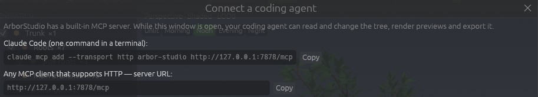
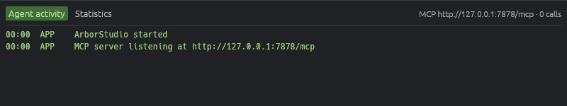

Working with coding agents
ArborStudio contains an MCP server (Model Context Protocol). A coding agent such as Claude Code can use it to read and change the open tree, render previews and export files, while you watch the changes in the window. You can describe a tree in words, ask for a set of variations for a game level, or let the agent export trees straight into your game project.
Connecting an agent
Choose Agent › Connect a coding agent…, or click the agent status at the right end of the toolbar. The dialog shows three ways to connect:

- Claude Code
- Copy the command and run it once in a terminal:
claude mcp add --transport http arbor-studio http://127.0.0.1:7878/mcp - Other MCP clients with HTTP support
- Add the server URL,
http://127.0.0.1:7878/mcp, in the client's MCP settings. - Clients that start servers themselves (stdio)
- Add the JSON block from the dialog to the client's MCP configuration. It runs ArborStudio with
--mcp-stdio. In this mode ArborStudio passes the agent's requests to the open window, and starts the window first if it is not running.
The server only accepts connections from the same computer. It runs while the ArborStudio window is open.
The toolbar shows the state of the link: Agent link ready when the server is running, the client's name once an agent has connected, and Agent link off when the server could not start.
--port 7900.Following what the agent does
Every change an agent makes appears in the viewport at once and can be undone like your own changes. The Agent activity tab below the viewport lists each tool call with its time.

What agents can do
The agent sees the following tools. Each tool has a description and the allowed values of its arguments, so you can ask in plain words; the agent chooses the tools.
| Area | Tools |
|---|---|
| Reading the tree | get_tree, get_parameter_reference, get_stats, list_presets |
| Starting a tree | new_tree, load_preset, randomize_seed |
| Generators | add_generator, update_generator, remove_generator, select_generator, set_curve |
| Tree settings | update_settings (seed, scale, age, colours, season, joints, wind) |
| Materials | list_materials, add_material, update_material, remove_material, assign_material |
| Forces, pruning, collision | add_force, update_force, remove_force, set_pruning, set_collision |
| Triangle budgets | set_triangle_budget, check_triangle_budget (see Triangle budgets) |
| Growth animation | set_growth (stages, duration, keyframes); each generator's params.growth in update_generator; growth or growth_stage in render_preview and set_view; include_growth in the exports (see Growth animation) |
| Single branches | list_nodes, edit_node, clear_node_edits |
| Viewing | set_view, render_preview, capture_window |
| Files | export_tree, export_variations, save_project, open_project |
| History | undo, redo |
render_preview returns a picture of the tree, which lets the agent check its own work. It renders in the background, so it also works while the window is hidden behind other windows. With growth it shows the tree at a point of its growth, and with wind_time (seconds) bent by the wind at that moment; a series of either makes an animation. capture_window returns a picture of the whole window.
Example requests
- “Load the pine preset, make it 20 m tall, render a preview and export it as GLB with LODs into my game's Assets/Trees folder.”
- “Make a weeping willow that leans towards the river on the +X side.”
- “Export eight variations of this oak with billboards, for a forest.”
- “Prune the tree into a 3 m wide ball on a 2 m stem, like a topiary.”
- “Show me the tree at ages 0.2, 0.5 and 1 and export each stage.”
- “Remove the lowest main branch on the side facing the camera.”
Running without a window
For scripts and build pipelines, ArborStudio can run without a window:
| Command | Effect |
|---|---|
arbor_studio --headless | Serves MCP over HTTP on port 7878 without opening a window. |
arbor_studio --headless --mcp-stdio | Serves MCP over standard input and output without a window. |
arbor_studio --no-mcp | Opens the window without starting the MCP server. |
Without a window, render_preview still works; capture_window does not.